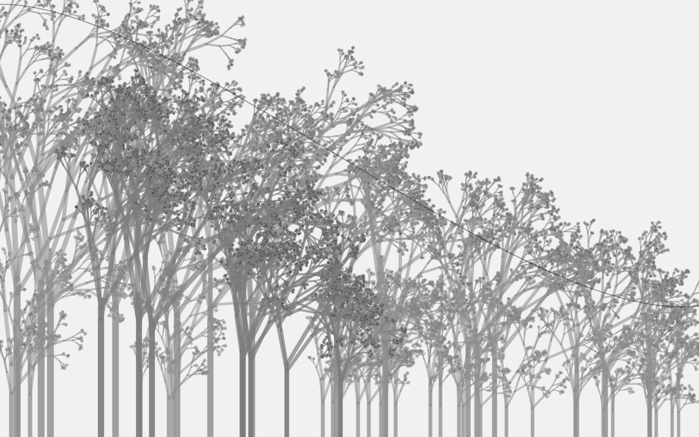
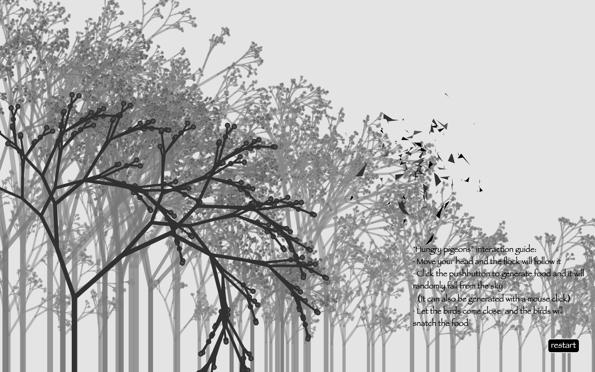

Introduction
Hungry Pigeons is an interactive art installation that takes inspiration from London's pigeon population, inviting the audience to explore the potential value of pigeons within the urban context. By approaching the subject from the perspectives of human feeding and pigeon foraging, the installation employs body recognition technology to immerse the audience in the same visual perspective as pigeons, allowing them to search for food. The objective is to provide a deeply interactive experience of role reversal, enabling a profound understanding of the pigeons' survival status and inherent worth.
Concept and Background Research
The mention of London's pigeons evokes a range of emotional expressions from different individuals. On one hand, some perceive them as unique and fascinating ecological entities within the cityscape. On the other hand, some view them as "winged rats," associating them with filth and indiscriminate defecation. However, I believe that the majority of people do not actively engage in understanding the pigeons' living conditions in the urban environment. Their relationship with humans has been strong throughout history, as they were used as communication buses before the industrial revolution and later for military activities, but their valuable attributes have gradually been forgotten due to technological developments. And then, the pigeons' relatively strong reproductive capacity has led to the proliferation of pigeon colonies in London. This has led to the often-seen scenes of pigeon predation.
The purpose of Hungry Pigeons is not to categorize the presence of such pigeon populations in London as inherently positive or negative, but rather to provide the audience with a fresh understanding. It aims to encourage individuals to reconstruct their perception of the relationship between humans and pigeons, as well as the relationship between pigeons and the urban environment.
Technical Implementation
The code of Hungry Pigeons can be divided into three major parts: the background generation section, the body recognition and flock feeding code section, and the physics section.
The background generation section is designed to address the issue of computer lag by forcibly splitting it from the main code. It utilizes a recursive algorithm to generate a forest background and a looping bird flock effect, which can result in visual inconsistencies. To solve this problem, I created the recursive forest separately and exported it as a background image for the final artwork. However, to use the random generation of the background, I kept a random tree generated in the main code part. The background is based on curves, altering the direction and length of the recursion to achieve the desired visual effect.
The main code sections include four components. Firstly, the bird morphology code is implemented by referencing the idea of shifting the array length found online, which allows the drawn images to be partially flipped, creating a flock-like effect. Secondly, the code for generation and foraging is inspired by the Creatures OOP code from the second week's course, combining it with the concept of birds competing for food.
The third component is the body recognition section, where I incorporate the position information of people's heads into the changing bodies of each bird, achieving the desired following effect. The fourth component is an HTML element added to the bottom right of the interface to provide interactive instructions and information, enhancing the overall interactive experience.
The final physics section incorporates Arduino and a pushbutton to allow the button to control the generation of the random food in the artwork. When the button is pressed, confirmation feedback is provided through an LED light, enhancing user interactivity.
Reflection and Future Development
Hungry Pigeons successfully achieved a deep integration between the audience and the flock, exploring an alternative possibility for the profound fusion of humans and pigeons. It delved into another dimension of the value expression of pigeon populations within the urban context of London.
During the creative process, the most significant aspect I experienced was the significance of interactivity in artwork. It allows the audience to engage more deeply with the intended message conveyed by the artist, providing greater potential for future creations of interactive artworks.
In terms of further development, I aspire to transform Arduino into a WiFi board to achieve wireless control, elevating the interactivity of Hungry Pigeons to the next level. Additionally, I aim to integrate the transmitted information into Max/MSP, combining it with real-time changing pigeon sounds, thereby enriching and enhancing the overall experience of the artwork.
References
- p5.js Web Editor n.d., editor.p5js.org, viewed 20 April 2023, https://editor.p5js.org/eri.kalaitzidi/sketches/ODpPqP2un.
- triangle birds - Naoki Kanazawa - OpenProcessing n.d., openprocessing.org, viewed 22 April 2023, https://openprocessing.org/sketch/871526.
- Gaietto, D.M., 2019. Pigeon-Human Negotiations through Practice. TRACE∴ Journal for Human-Animal Studies, 5, pp.56-80.
- Hook, K., 2018. Designing with the body: Somaesthetic interaction design. Mit Press.
- Kwastek, K., 2013. Aesthetics of interaction in digital art. Mit Press.
- Hemelrijk, C.K. and Hildenbrandt, H., 2012. Schools of fish and flocks of birds: their shape and internal structure by self-organization. Interface focus, 2(6), pp.726-737.
- Hutton, M. and Goodman, G.T., 1980. Metal contamination of feral pigeons Columba livia from the London area: part 1—tissue accumulation of lead, cadmium and zinc. Environmental Pollution Series A, Ecological and Biological, 22(3), pp.207-217.